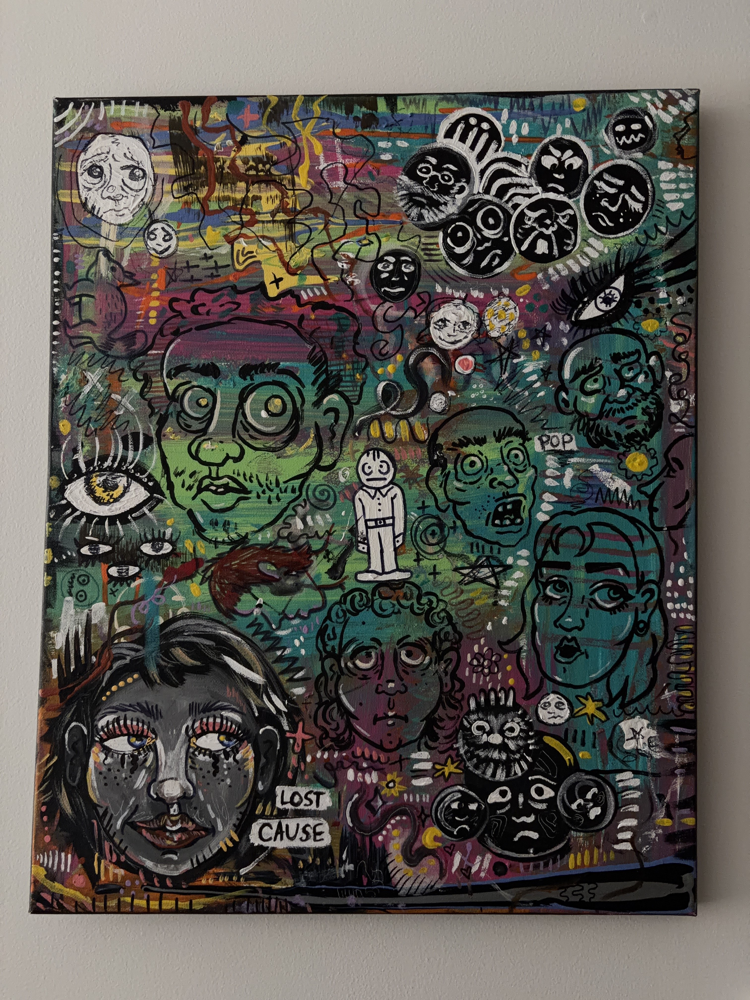
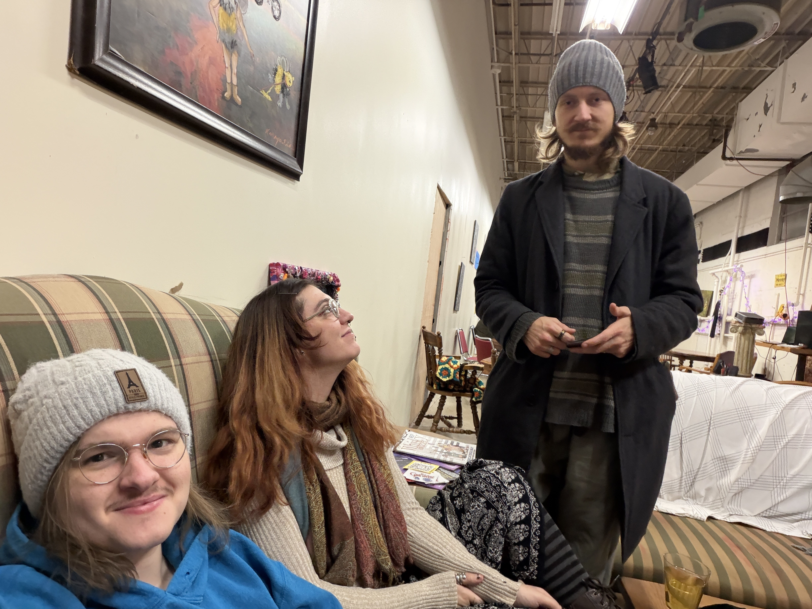

I wrote up the outline for a blog post about my last day in Minneapolis before going home for the holidays, but never ended up writing it. So here's the outline:
I’ve been up for 36 hours and I’m blazing and warm and itchy. I’ve been writing and deleting things constantly. Individual seconds are shorter even though everything feels the same pace. And other tells
I’m hypomanic, again
Been a bit
I went to my friend Pigeon’s thing tonight at the 2010 Artblok. Showed up around 5, after working on IOOD 1.2.0 since noon the previous day. They had an art fair thing going from 12-6 but by 5 literally everywhere except the guys in the brewery was closed. I was planning on buying a print of that furry bara I saw the previous time I was at the 2010 artblok, but man, that wasn’t happening. As I came in I was greeted by Attica, from last time I came by 2010 artblok, who was very nice. Then I looked around at paintings awhile. Then Pigeon and Morgan showed up, and Pigeon’s friend Andrew. And uh. Then music began. At 6.
I ended up buying a painting from Allison Witzmann, one of the artists there. They told me they made like 40 paintings of that size in the month before their father died, and they each had a poem as the theme that she wouldn’t tell anyone, and she couldn’t remember the initials for the words of the poem for this painting. But it captured me. It was beautiful.

The painting 😌
I then relaxed and did a Monster Movie Boxart jigsaw puzzle with Pigeon and Morgan and Andrew. It was rad

Me, Pigeon, and Andrew.
I played plastic axe throw with the band that played first, before the band before Hayley and Morgan. One of them like made a telephone motion at me but then said rock on. Mixed messages. Idk. It was interesting.
I felt so euphorically in the moment
Oh and that guy from Thanksgiving was there
And then it was all over and I made new year’s plans with pigeon and Morgan and then I drove home
And now I’m home. And I took my meds. And I’m in bed. And I’ve been up for 36 hours. And I’m planning on driving back to Stillwater for the holidays when I wake up. And it’s like, man
I’m hypomanic
This is how hypomania feels when it’s good
I’m social as all hell and I’m energetic but relaxed, and I’m productive as shit but not overly-stressed
I feel exploding in impermanence and it’s euphoric. I know it’ll feel like how it usually does in a manner of time, a plasmatic automaton. But I’m not there yet
It’s not a cool blue glow from within right now. It might’ve been earlier tonight, I didn’t think to check
But it’s externalized. I’m itchy. I’m very itchy
I think this is where the blog post ends